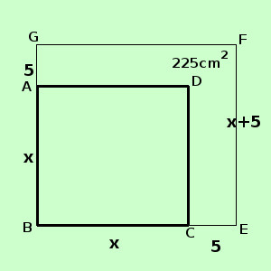

|
sviluppo Risolvere il seguente problema Calcolare la misura del lato di un quadrato sapendo che se si aumenta il lato di 5 cm. la sua area aumenta di 225 cm2 ipotesi: la figura e' un quadrato se si aumenta il lato di 5 cm. la sua area aumenta di 225 cm2 tesi: trovare la misura del lato  l'area del quadrato si calcola facendo il lato al quadrato chiamo x la misura del lato Lato del quadrato iniziale = BC = x Lato del quadrato aumentato = BE = x + 5 Per renderlo piu' chiaro posso trasformarlo come se aggiungo 225 cm2 all'area di un quadrato di lato x trovo l'area di un quadrato di lato x + 5 Calcolo le aree dei due quadrati Area del quadrato iniziale = BC2 = x2 Area del quadrato aumentato = BE2 = (x + 5)2 225 + BC2= BE2 sostituisco ai segmenti i loro valori in x ed in numeri 225 + x2 = (x + 5)2 sviluppo il quadrato 225 + x2 = x2 + 10x + 25 sposto i termini con la x prima dell'uguale e quelli senza x dopo l'uguale; chi salta l'uguale cambia di segno x2 - x2 - 10x = 25 -225 sommo i termini simili - 10x = - 200 applico il secondo principio per trovare la x
x = 20 Lato del quadrato iniziale = BC = x = 20 cm |